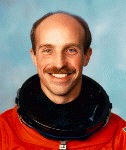

Lyndon B. Johnson Space Center
Houston, Texas 77058
|
National Aeronautics and Space Administration Lyndon B. Johnson Space Center Houston, Texas 77058 |
 |
Biographical Data |
||
James P. Bagian (M.D., P.E.)
NASA Astronaut (former)
PERSONAL DATA: Born February 22, 1952, in Philadelphia, Pennsylvania. Married to the former Tandi M. Benson of Seattle, Washington. They have four children. Recreational interests include bicycling, backpacking, climbing, swimming, flying and racquet sports, as well as cabinet-making and automobile rebuilding.
EDUCATION: Graduated from Central High School in Philadelphia, Pennsylvania, in 1969; received a bachelor of science degree in mechanical engineering from Drexel University in 1973, and a doctorate in medicine from Thomas Jefferson University in 1977.
ORGANIZATIONS: Member of the Aerospace Medicine Association, the College of Emergency Physicians, the American Society of Mechanical Engineers; life member of the Society of NASA Flight Surgeons; and member of Phi Kappa Phi, Phi Eta Sigma, Pi Tau Sigma, Tau Beta Pi, and Alpha Omega Alpha.
SPECIAL HONORS: U.S. Army ROTC Superior Cadet Award (1970); graduated first in class from Drexel University (1973); Orthopedics Prize from Jefferson University (1977); Honor Graduate (first in class) from USAF Flight Surgeons School (1979); Federation Aeronautique Internationale (FAI) Komarov Diploma (1989); Sikorsky Helicopter Rescue Award (1990); NASA Achievement Award for developing treatment of space motion sickness (1991); NASA Space Flight Award (1989 and 1991); NASA Exceptional Service Medal (1992); Society of NASA Flight Surgeons W. Randolf Lovelace Award for ‘‘significant contribution to the practice and advancement of aerospace medicine’’ (1992); American Astronautical Society’s Melbourne W. Boynton Award for ‘‘outstanding contributions to the biomedical aspects of space flight’’ (1992).
EXPERIENCE: Bagian worked as a process engineer for the 3M Company in Bristol, Pennsylvania, in 1973, and later as a mechanical engineer at the U.S. Naval Air Test Center at Patuxent River, Maryland, from 1976 to 1978, and at the same time pursued studies for a doctorate in medicine. Upon graduating from Thomas Jefferson University in 1977, he completed one year of general surgery residency with the Geisinger Medical Center in Danville, Pennsylvania. Dr. Bagian subsequently went to work as a flight surgeon and research medical officer at the Lyndon B. Johnson Space Center in 1978, while concurrently completing studies at the USAF Flight Surgeons School and USAF School of Aerospace Medicine in San Antonio, Texas. He was completing a residency in anesthesiology at the University of Pennsylvania when notified of his selection by NASA for the astronaut candidate program. Dr. Bagian received his Professional Engineers Certification in 1986, and was board-certified in aerospace medicine by the American College of Preventive Medicine in 1987. Since 1981, Dr. Bagian has been active in the mountain rescue community and has served as a member of the Denali Medical Research Project on Mt. McKinley. He has also been a snow-and-ice rescue techniques instructor on Mt. Hood during this period. Dr. Bagian is a colonel in the U.S. Air Force Reserve and is the pararescue flight surgeon for the 939th Air Rescue Wing. He is a USAF-qualified freefall parachutist, holds a private pilot’s license and has logged over 1,500 hours flying time in propeller and jet aircraft, helicopters, and gliders.
NASA EXPERIENCE: Bagian became a NASA astronaut in July 1980. He took part in both the planning and provision of emergency medical and rescue support for the first six Shuttle flights. He also served as the Astronaut Office coordinator for Space Shuttle payload software and crew equipment, as well as supporting the development of a variety of payloads and participating in the verification of Space Shuttle flight software. In 1986, Dr. Bagian served as an investigator for the STS 51-L accident board. He also was responsible for the development program and implementation of the pressure suit used for crew escape and various other crew survival equipment to be used on future Shuttle missions, and was in charge of Shuttle search and rescue planning and implementation for the Astronaut Office. Dr. Bagian was a member of the NASA Headquarters Research Animal Holding Facility Review Board. He has authored numerous scientific papers in the fields of human factors, environmental and aerospace medicine. A veteran of two space flights, STS-29 in 1989 and STS-40 in 1991, Dr. Bagian has logged over 337 hours in space.
Dr. Bagian is taking a leave of absence from NASA. He is currently involved in both the practice of occupational medicine and biomedical research.
SPACE FLIGHT EXPERIENCE: STS-29 Discovery, March 13-18, 1989, was launched from the Kennedy Space Center, Florida, and returned to land at Edwards Air Force Base, California. During the highly successful five-day mission, the crew deployed a Tracking and Data Relay Satellite and performed numerous secondary experiments, including a Space Station “heat pipe” radiator experiment, two student experiments, a protein crystal growth experiment, and a chromosome and plant cell division experiment. Dr. Bagian was the principal investigator and performed Detailed Supplementary Objective 470 which described, by the use of transcranial Doppler, the changes of cerebral blood flow and its relationship to Space Adaptation Syndrome (SAS) and Space Motion Sickness (SMS). Dr. Bagian was the first person to treat SMS with the drug Phenergan by intramuscular injection. This represented the first successful treatment regimen for SMS and has now been adopted by NASA as the standard of care for the control of SMS in Shuttle crews and is routinely used. In addition, the crew took over 3,000 photographs of the Earth using several types of cameras, including the IMAX 70 mm movie camera. In completing his first space flight Dr. Bagian logged over 119 hours in space in 80 Earth orbits.
STS-40 Columbia, Spacelab Life Sciences (SLS-1), June 5-14, 1991, a dedicated space and life sciences mission, was launched from the Kennedy Space Center, Florida, and returned to landat Edwards Air Force Base, California. During the nine-day mission the crew performed experiments which explored how the heart, blood vessels, lungs, kidneys, and hormone-secreting glands respond to microgravity, the causes of space sickness, and changes in muscles, bones, and cells which occur in humans during space flight. Other payloads included experiments designed to investigate materials science, plant biology and cosmic radiation. In addition to the scheduled payload activities on STS-40, Dr. Bagian was successful in personally devising and implementing repair procedures for malfunctioning experiment hardware which allowed all scheduled scientific objectives to be successfully accomplished. Completion of this flight logged him an additional 218 hours in space in 146 Earth orbits.
MAY 1995
This is the only version available from NASA. Updates must be sought direct from the above named individual.
{kind=link}